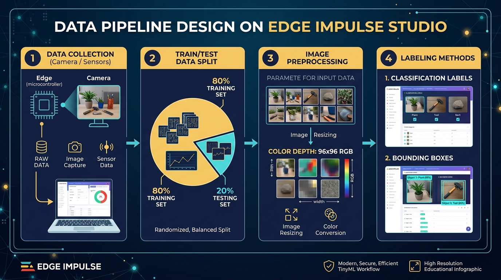

สาระสำคัญและผลการเรียนรู้ประจำบท
กรอบมาตรฐานการเรียนรู้ตามหลักสูตรแกนกลางการศึกษาขั้นพื้นฐาน และสมรรถนะสำคัญของผู้เรียน
การสั่งงานอุปกรณ์ด้วยเสียงพูดบนระบบสมองกลฝังตัว (Keyword Spotting: KWS) อาศัยกระบวนการแปลงสัญญาณเสียงดิจิทัลจากไมโครโฟนไปเป็นสเปกโทรแกรมด้วยเทคนิค MFCC (Mel-Frequency Cepstral Coefficients) เพื่อเลียนแบบการได้ยินของมนุษย์และสกัดคุณลักษณะเสียงเด่น การพัฒนาแบบจำลองคำสั่งเสียงภาษาไทยที่มีประสิทธิภาพสูงจำเป็นต้องใช้เทคนิคการตัดแบ่งคำอัตโนมัติ (Split Sample) ความยาว 1 วินาที และการออกแบบคลาส unknown โดยการบันทึกคำภาษาไทยที่ออกเสียงคล้ายคลึงกับคำสั่งหลัก (เช่น เปิด/เปิป, แดง/แดน) เพื่อลดอัตราการแจ้งเตือนผิดพลาด (False Positive) และนำผลลัพธ์การรู้จำคำสั่งไปควบคุมวงจรรีเลย์และอุปกรณ์ไฟฟ้าได้อย่างแม่นยำ
ผลการเรียนรู้ที่คาดหวังตามกรอบสมรรถนะ (Learning Outcomes)
ผู้เรียนสามารถอธิบายหลักการสกัดคุณลักษณะเสียงด้วย MFCC Spectrogram, การแปลงสัญญาณเสียงโดเมนเวลาสู่โดเมนความถี่ และความสัมพันธ์ระหว่างค่าความผิดพลาด FAR และ FRR ได้อย่างถูกต้อง
ผู้เรียนสามารถบันทึกเสียงคำสั่งภาษาไทยผ่านไมโครโฟน ใช้เครื่องมือ Split Sample ตัดแบ่งไฟล์เสียง 1 วินาที และออกแบบคลาส Unknown ด้วยคำภาษาไทยพ้องเสียงเพื่อเพิ่มความทนทานของโมเดลได้อย่างถูกต้อง
ผู้เรียนสามารถฝึกสอนโมเดล KWS ติดตั้งไฟล์ .eim ลงสู่บอร์ด Arduino UNO Q และเขียนโปรแกรมภาษาไพทอนเพื่อดักจับคำสั่งเสียงสดผ่านไมโครโฟนไปสั่งการเปิด-ปิดรีเลย์และไฟ LED ได้อย่างสมบูรณ์
ผู้เรียนมีความภูมิใจและเห็นคุณค่าในการประยุกต์ใช้เทคโนโลยีปัญญาประดิษฐ์กับภาษาไทย มีความอดทนในการบันทึกตัวอย่างเสียงหลากหลายโทนเสียง และตระหนักถึงจริยธรรมข้อมูลเสียงส่วนบุคคล
สถาปัตยกรรมการประมวลผลสัญญาณเสียงและการรู้จำคำสั่ง (KWS Audio Architecture)
ขั้นตอนการแปลงคลื่นเสียงอนาล็อกสู่ภาพสเปกโทรแกรม MFCC และการจำแนกคำสั่งด้วยโครงข่ายประสาทสังวัตนาการ

ขั้นตอนการประมวลผลสัญญาณเสียงดิจิทัล (Audio Processing Stages):
- การสุ่มตัวอย่างเสียง (Audio Sampling): สุ่มตัวอย่างที่ความถี่ 16,000 Hz (16 kHz) ขนาด 16-bit PCM เพื่อให้ครอบคลุมความถี่เสียงพูดมนุษย์ (สูงสุด 8,000 Hz) ตามทฤษฎีบท Nyquist
- การแบ่งเฟรมและหน้าต่างเวลา (Framing & Windowing): ซอยสัญญาณเป็นเฟรมย่อยขนาด 20 มิลลิวินาที (Frame Size) เลื่อนครั้งละ 10 มิลลิวินาที (Frame Stride) พร้อมใส่หน้าต่าง Hanning Window เพื่อลดการรั่วไหลของสเปกตรัม (Spectral Leakage)
- การแปลงฟูเรียร์เร็ว (FFT & Filterbank): แปลงสัญญาณโดเมนเวลาเป็นโดเมนความถี่ และส่งผ่านแถบกรอง Mel Filterbank ตามการได้ยินของหูมนุษย์
- การแปลงโคไซน์ไม่ต่อเนื่อง (DCT): แปลงแถบกรองลอการิทึมให้กลายเป็นค่าสัมประสิทธิ์ MFCC Spectrogram (เมทริกซ์ 2 มิติ)
- การทำนายด้วย 1D/2D CNN: โครงข่ายประสาทเรียนรู้ลวดลายเสียงและให้คะแนนความน่าจะเป็น Softmax ของคำสั่งภาษาไทย
การสกัดคุณลักษณะเสียงด้วย MFCC (Mel-Frequency Cepstral Coefficients)
ทำไมสัญญาณคลื่นเสียงดิบจึงไม่เหมาะกับโครงข่ายประสาท และเหตุใดสเกลเมลจึงเลียนแบบการได้ยินของมนุษย์ได้ดีที่สุด
คลื่นเสียงในรูปแบบสัญญาณดิบ (Raw Time-domain Waveform) มีการเปลี่ยนแปลงตามคาบเวลาและระดับความดังที่ผันผวนสูงมาก การป้อนสัญญาณดิบเข้าสู่โครงข่ายประสาทโดยตรงต้องใช้พารามิเตอร์จำนวนมหาศาลและมีความแม่นยำต่ำ ในวงการประมวลผลเสียงพูดจึงนิยมสกัดคุณลักษณะเด่นด้วย MFCC (Mel-Frequency Cepstral Coefficients) ซึ่งเป็นการแปลงคลื่นเสียงให้อยู่ในรูปของภาพสเปกโทรแกรม 2 มิติ (เวลา vs ความถี่)
เมื่อ f คือความถี่ทางกายภาพในหน่วยเฮิร์ตซ์ (Hz) และ m คือระดับเสียงตามการรับรู้ของมนุษย์ในหน่วยเมล (Mels) หูมนุษย์จะแยกแยะความแตกต่างของความถี่ต่ำ (< 1,000 Hz) ได้ละเอียดกว่าความถี่สูง สเกลเมลจึงช่วยบีบอัดข้อมูลโดยคงรายละเอียดสำคัญของเสียงพูดไว้ครบถ้วน
- ใช้กระบวนการ Discrete Cosine Transform (DCT) เพื่อตัดความสัมพันธ์ระหว่างช่องความถี่
- ขนาดข้อมูลกะทัดรัดมาก (เหมาะกับโมเดลขนาดเล็กบน Edge AI)
- เหมาะที่สุดสำหรับ: เสียงพูดของมนุษย์ (Human Speech & KWS)
- คงรายละเอียดพลังงานในแต่ละย่านความถี่ไว้โดยไม่ทำ DCT
- รักษาคุณลักษณะของเสียงที่มีความถี่ไม่ต่อเนื่องได้ดี
- เหมาะที่สุดสำหรับ: เสียงสิ่งแวดล้อมและเสียงเครื่องจักร (บทที่ 12)
การจัดเตรียมชุดข้อมูลคำสั่งเสียงภาษาไทยและการจัดการคลาส Unknown / Noise
โครงสร้างข้อมูล 3 มิติสำหรับการฝึกสอนโมเดลเสียงพูดภาษาไทยให้ทนทานต่อสภาพแวดล้อมจริง
ภาษาไทยเป็นภาษาที่มีวรรณยุกต์และมีคำพ้องเสียงหรือคำที่มีสระใกล้เคียงกันจำนวนมาก ในการออกแบบระบบรู้จำคำสั่งเสียงภาษาไทยที่มีประสิทธิภาพสูง เราต้องจัดกลุ่มข้อมูลออกเป็น 3 องค์ประกอบหลัก:
คำสั่งเสียงหลักที่ต้องการให้ระบบสั่งงาน เช่น "เปิด", "ปิด", "แดง", "เขียว" โดยบันทึกจากผู้พูดที่หลากหลาย ทั้งชาย หญิง และระดับเสียงที่ต่างกัน (คลาสละ 40–60 ตัวอย่าง)
คำพูดภาษาไทยทั่วไปและคำที่ออกเสียงคล้ายคำสั่งเป้าหมาย เช่น "แดน", "แทง", "เปิด-เปิป", "เป็ด", "ชิด" เพื่อสอนให้โมเดลแยกแยะและ เพิกเฉย (Ignore) ไม่สั่งงานผิดพลาด
เสียงสภาพแวดล้อมที่ไม่มีเสียงพูด เช่น เสียงแอร์ เสียงพัดลม เสียงคีย์บอร์ดพิมพ์งาน และเสียงเครื่องจักร เพื่อให้ระบบอยู่ในสถานะพัก (Idle) เมื่อไม่มีคนพูด

การกำหนดค่า Keyword Spotting Brick ในไฟล์ app.yaml
การเชื่อมต่อไดรเวอร์ไมโครโฟนดิจิทัลเข้าสู่สถาปัตยกรรมมอดูลาร์บนบอร์ดพัฒนา Arduino UNO Q
มอดูล Keyword Spotting Brick บนบอร์ดพัฒนา Arduino UNO Q จะทำหน้าที่สตรีมข้อมูลเสียงจากไมโครโฟนเข้ามาในลักษณะบัฟเฟอร์เลื่อน (Sliding Window Buffer) ทุก ๆ 250 มิลลิวินาที และส่งเข้าสู่โมเดล .eim อย่างต่อเนื่อง โดยที่เราสามารถระบุค่าคอนฟิกูเรชันในไฟล์ app.yaml ดังนี้:
โครงสร้างไฟล์คอนฟิกูเรชัน app.yaml สำหรับระบบรับคำสั่งเสียงภาษาไทย:
name: "Thai Voice Command App"
description: "ระบบรู้จำคำสั่งเสียงภาษาไทยผ่านไมโครโฟนและควบคุมอุปกรณ์เอาต์พุต"
ports: []
variables:
EI_KEYWORD_SPOTTING_MODEL: "/home/arduino/.arduino-bricks/ei-models/thai_kws.eim"
CONFIDENCE_THRESHOLD: "0.85"
DEBOUNCE_SEC: "2.0"
bricks:
- arduino:keyword_spotting: {}
- arduino:relay_control:
variables:
LAMP_RELAY_PIN: "7"
LED_RED_PIN: "8"
LED_GREEN_PIN: "9"กลไกป้องกันคำสั่งซ้ำซ้อน (Debounce Logic) และการควบคุมอุปกรณ์เอาต์พุต
การจัดการปัญหาเสียงลากยาว เสียงสะท้อน และการสั่งการหลอดไฟส่องสว่างผ่านรีเลย์กำลัง
เนื่องจากสถาปัตยกรรม Keyword Spotting ทำงานในลักษณะ Continuous Sliding Window เมื่อผู้ใช้งานพูดคำว่า "เปิดดดด" อย่างต่อเนื่อง สัญญาณเสียงคำว่า "เปิด" อาจปรากฏในหน้าต่างประมวลผลติดกัน 2–3 หน้าต่าง ส่งผลให้ระบบสั่งการเปิด-ปิดรีเลย์ซ้ำซ้อนติดต่อกันอย่างรวดเร็ว (Chattering) เพื่อแก้ไขปัญหานี้ เราจึงต้องประยุกต์ใช้ กลไกหน่วงเวลาป้องกันคำสั่งซ้ำ (Software Debounce Logic)
เมื่อระบบตรวจพบคำสั่งเป้าหมายและสั่งการฮาร์ดแวร์แล้ว ระบบจะบันทึกเวลาล่าสุด t_last = time.time() หากมีคำสั่งเดียวกันเข้ามาอีกภายในระยะเวลา 2.0 วินาที ระบบจะเพิกเฉยคำสั่งนั้นทันที
คำสั่ง "เปิด" จะส่งสัญญาณดิจิทัล HIGH ไปยังพิน 7 ของรีเลย์เพื่อเปิดวงจรหลอดไฟ 220V ส่วนคำสั่ง "แดง" และ "เขียว" จะควบคุมหลอดไฟ LED ที่พิน 8 และ 9 เพื่อแสดงสถานะความปลอดภัยของเครื่องจักร
โค้ดโปรแกรมรู้จำคำสั่งเสียงภาษาไทย (thai_kws_live.py)
สคริปต์ไพทอนฉบับสมบูรณ์ รองรับการทำงานทั้งบนบอร์ดพัฒนา Arduino UNO Q และโหมดจำลองคอนโซล
#!/usr/bin/env python3
# -*- coding: utf-8 -*-
import sys, time
try:
from arduino.app_bricks.keyword_spotting import KeywordSpotting
from arduino.app_utils import App
IS_ARDUINO_ENV = True
except ImportError:
IS_ARDUINO_ENV = False
class ThaiVoiceCommander:
"""คลาสจัดการการตรวจจับคำสั่งเสียงภาษาไทยและควบคุมฮาร์ดแวร์เอาต์พุต"""
def __init__(self, confidence_threshold=0.85, debounce_sec=2.0):
self.threshold = confidence_threshold
self.debounce_sec = debounce_sec
self.last_trigger_time = 0.0
self.last_command = ""
self.hardware_state = {"lamp_relay": False, "led_red": False, "led_green": False}
def execute_command(self, label: str, confidence: float = 0.90):
current_time = time.time()
cmd = label.lower().strip()
# 1. ตรวจสอบการหน่วงเวลาป้องกันคำสั่งซ้ำซ้อน (Debouncing)
if (current_time - self.last_trigger_time) < self.debounce_sec and cmd == self.last_command:
print(f"[!] คำสั่ง '{label}' ถูกปฏิเสธ (อยู่ในช่วง Debounce Lock {self.debounce_sec:.1f} วินาที)")
return
# 2. ตรวจสอบเกณฑ์ความเชื่อมั่น
if confidence < self.threshold:
print(f"[?] ความเชื่อมั่นต่ำ ({confidence*100:.1f}% < {self.threshold*100:.0f}%)")
return
self.last_trigger_time = current_time
self.last_command = cmd
print(f"\n[VOICE DETECTED] รับคำสั่งเสียง: '{label}' (ความเชื่อมั่น: {confidence*100:.2f}%)")
if cmd in ["open", "เปิด"]:
self.hardware_state["lamp_relay"] = True
print(" -> สั่งการ: [เปิดไฟส่องสว่าง] สัญญาณ Relay Pin 7 = HIGH")
elif cmd in ["close", "ปิด"]:
self.hardware_state["lamp_relay"] = False
print(" -> สั่งการ: [ปิดไฟส่องสว่าง] สัญญาณ Relay Pin 7 = LOW")
elif cmd in ["red", "แดง"]:
self.hardware_state["led_red"] = True
self.hardware_state["led_green"] = False
print(" -> สั่งการ: [เปิดไฟเตือนสีแดง] LED RED = ON | LED GREEN = OFF")
elif cmd in ["green", "เขียว"]:
self.hardware_state["led_green"] = True
self.hardware_state["led_red"] = False
print(" -> สั่งการ: [เปิดไฟสถานะสีเขียว] LED GREEN = ON | LED RED = OFF")
elif cmd in ["unknown", "noise"]:
print(" -> คัดกรอง: ตรวจพบเสียงอื่นหรือคำพ้องเสียง (เพิกเฉยคำสั่ง)")ผลการทดสอบการทำงานผ่านคอนโซล (Execution Console Output):
========================================================================
ระบบรู้จำคำสั่งเสียงภาษาไทยผ่านไมโครโฟน (Thai Keyword Spotting)
หลักสูตร: การพัฒนาปัญญาประดิษฐ์บนอุปกรณ์ขอบ (บทเรียนที่ 11)
========================================================================
[*] เริ่มต้นการทดสอบในโหมดจำลองสถานการณ์คอนโซล (Console Simulation)...
[*] คำสั่งเป้าหมายที่รองรับ: 'เปิด', 'ปิด', 'แดง', 'เขียว'
[*] กำหนดค่าเกณฑ์ความเชื่อมั่น (Confidence Threshold): 0.85 (85%)
[*] ระยะเวลาหน่วงป้องกันคำสั่งซ้ำ (Debounce Time): 2.0 วินาที
------------------------------------------------------------------------
--- [รอบการทดสอบสัญญาณเสียงที่ 1 / 6] ---
[14:33:27] [VOICE DETECTED] รับคำสั่งเสียง: 'เปิด' (ความเชื่อมั่น: 94.00%)
-> สั่งการฮาร์ดแวร์: [เปิดไฟส่องสว่าง] สัญญาณ Relay Pin 7 = HIGH (เปิดทำงาน)
[สถานะปัจจุบัน] Relay: ON | LED แดง: OFF | LED เขียว: OFF
--- [รอบการทดสอบสัญญาณเสียงที่ 2 / 6] ---
[14:33:27] [VOICE DETECTED] รับคำสั่งเสียง: 'แดง' (ความเชื่อมั่น: 91.00%)
-> สั่งการฮาร์ดแวร์: [เปิดไฟเตือนสีแดง] LED RED Pin 8 = ON | LED GREEN Pin 9 = OFF
[สถานะปัจจุบัน] Relay: ON | LED แดง: ON | LED เขียว: OFF
--- [รอบการทดสอบสัญญาณเสียงที่ 3 / 6] ---
[14:33:27] [VOICE DETECTED] รับคำสั่งเสียง: 'unknown' (ความเชื่อมั่น: 88.00%)
-> การคัดกรอง: ตรวจพบเสียงรบกวนหรือคำใกล้เคียงที่ไม่อยู่ในเงื่อนไข (เพิกเฉยคำสั่ง)
[สถานะปัจจุบัน] Relay: ON | LED แดง: ON | LED เขียว: OFF
--- [รอบการทดสอบสัญญาณเสียงที่ 4 / 6] ---
[14:33:27] [VOICE DETECTED] รับคำสั่งเสียง: 'เขียว' (ความเชื่อมั่น: 92.00%)
-> สั่งการฮาร์ดแวร์: [เปิดไฟสถานะสีเขียว] LED GREEN Pin 9 = ON | LED RED Pin 8 = OFF
[สถานะปัจจุบัน] Relay: ON | LED แดง: OFF | LED เขียว: ON
--- [รอบการทดสอบสัญญาณเสียงที่ 5 / 6] ---
[14:33:28] [VOICE DETECTED] รับคำสั่งเสียง: 'ปิด' (ความเชื่อมั่น: 95.00%)
-> สั่งการฮาร์ดแวร์: [ปิดไฟส่องสว่าง] สัญญาณ Relay Pin 7 = LOW (ปิดทำงาน)
[สถานะปัจจุบัน] Relay: OFF | LED แดง: OFF | LED เขียว: ON
--- [รอบการทดสอบสัญญาณเสียงที่ 6 / 6] ---
[14:33:28] [!] คำสั่ง 'ปิด' ถูกปฏิเสธ (อยู่ในช่วง Debounce Lock 2.0 วินาที)
========================================================================
สรุปสถิติผลการตรวจจับคำสั่งเสียงภาษาไทย
========================================================================
- คำสั่ง 'เปิด ': 1 ครั้ง
- คำสั่ง 'ปิด ': 1 ครั้ง
- คำสั่ง 'แดง ': 1 ครั้ง
- คำสั่ง 'เขียว ': 1 ครั้ง
- คำสั่ง 'unknown ': 1 ครั้ง
========================================================================
[✓] การทดสอบระบบรู้จำคำสั่งเสียงภาษาไทยเสร็จสมบูรณ์ พร้อมเชื่อมต่อไมโครโฟนจริงภารกิจปฏิบัติการประจำบทเรียน (Hands-on Lab Checklist)
ทำเครื่องหมายในช่องสี่เหลี่ยมเมื่อปฏิบัติตามขั้นตอนสำเร็จ เพื่อบันทึกความก้าวหน้าการเรียนรู้
คำถามทบทวนองค์ความรู้ท้ายบทเรียน (Review Questions)
ทดสอบความเข้าใจเชิงลึกเกี่ยวกับหลักการประมวลผลสัญญาณเสียงและการรู้จำคำสั่งเสียงภาษาไทย
คลิกเพื่อดูแนวคำตอบ
คลิกเพื่อดูแนวคำตอบ
คลิกเพื่อดูแนวคำตอบ
แบบทดสอบท้ายบทเรียนที่ 11 (ปรนัย 10 ข้อ)
ทดสอบความรู้ความเข้าใจตามเกณฑ์มาตรฐานตัวชี้วัดสาระเทคโนโลยี พร้อมเฉลยและบันทึกคะแนนอัตโนมัติ